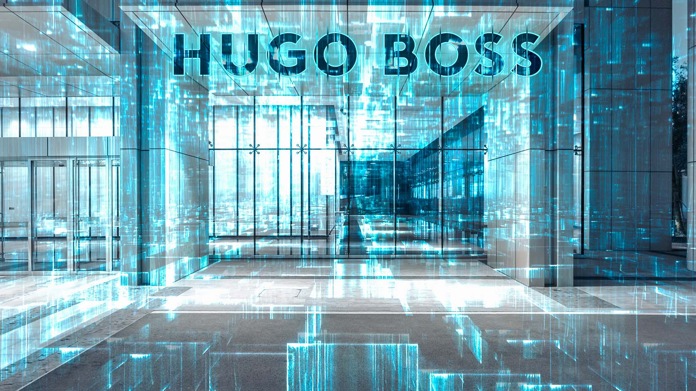
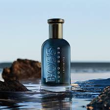

HUGO BOSS
INICIO
BLOG
GALERÍA
VIDEOS

Un Poco sobre BOSS
La historia de Hugo Ferdinand Boss Hugo Ferdinand Boss nació en Metzingen, Alemania, en 1885. Comenzó su carrera en el mundo de la moda como aprendiz de comerciante textil en la ciudad de Ulm. En 1924, decidió fundar su propia empresa de ropa y creó la marca “Hugo Boss”.
HUGO BOSS es una de las empresas líderes en moda y estilo de vida premium. Alrededor de 19.000 empleados en todo el mundo trabajan duro para garantizar la calidad de nuestros productos. Pero la fascinación por la moda no es lo único que nuestro personal tiene en común: también queremos inspirar a la gente con nuestro trabajo. Y esta inspiración comienza con nuestros empleados. Por eso fomentamos un ambiente de trabajo en el que puedas aportar tu personalidad, ideas y creatividad. Diseña tu lugar de trabajo y tu futuro profesional de la forma que más te convenga. Sólo cuando trabajemos juntos surgirá algo único.
Trabajo responsable, libertad de acción y autonomía, formación individual y un equilibrio saludable entre vida personal y laboral: así es una carrera en HUGO BOSS. Descubra las numerosas oportunidades profesionales y de nivel inicial que ofrecemos.
Siguenos en nuestras redes: